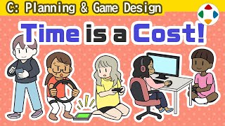
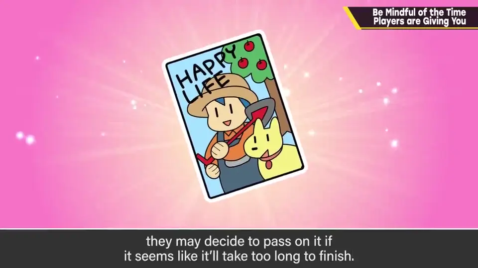
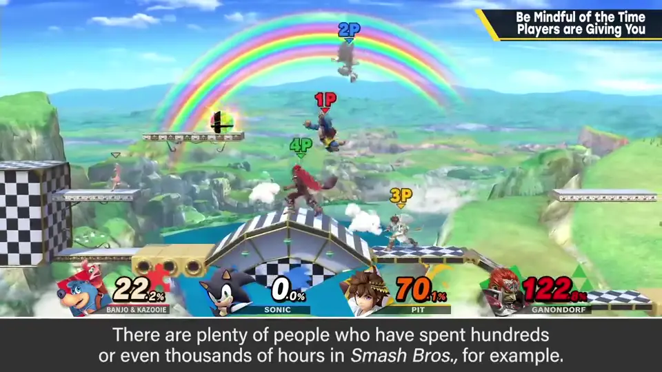
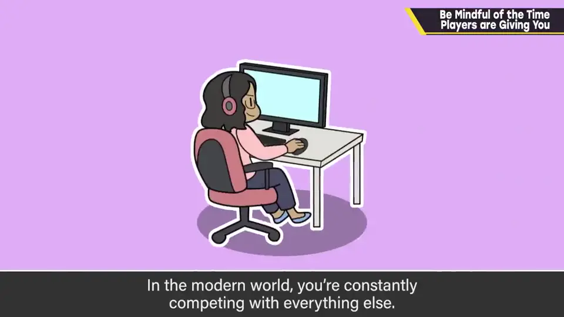
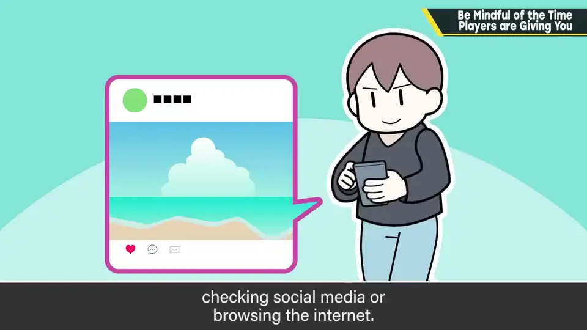
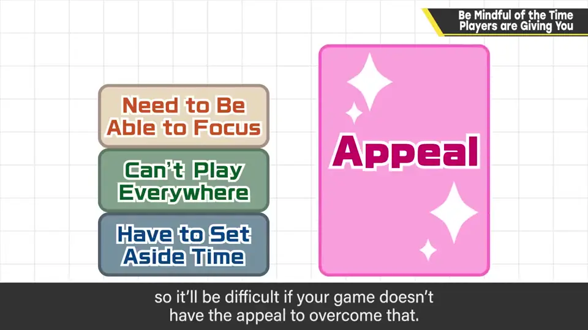
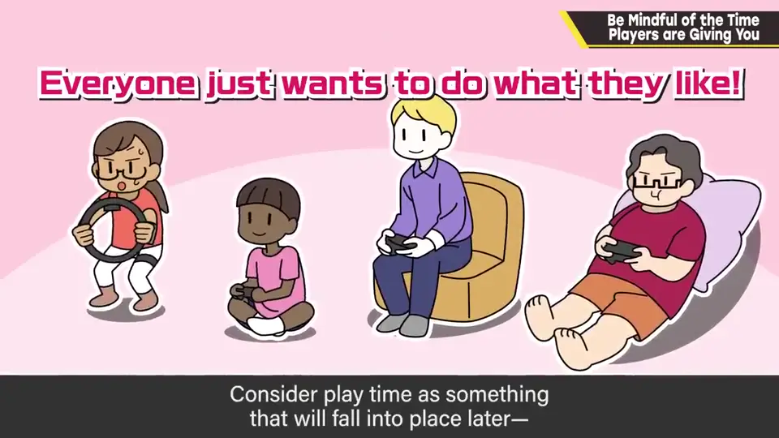
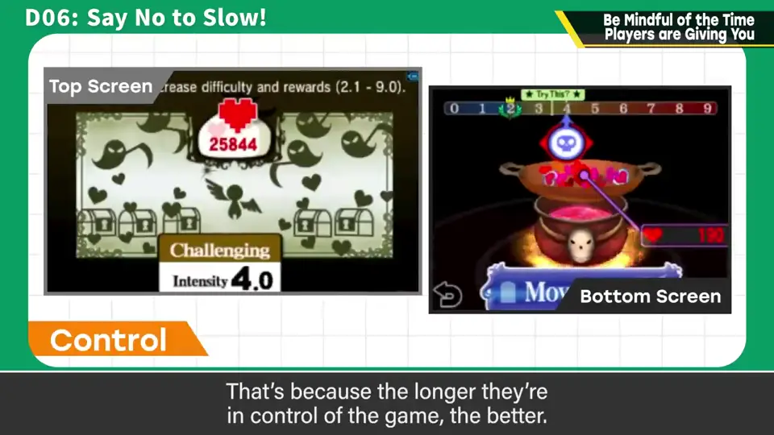

速览
玩之前被告知「这款游戏通关能玩 300 小时」，大概会退缩。挑选买什么游戏时，就算看起来很好玩，若似乎要花过多时间也可能放弃；即使它真的好玩，想到那段时间还能做什么，就会很空虚。游戏确实会被玩上几百小时，《大乱斗》也有很多人玩了几百、几千小时（抱歉）。但花在游戏上的时间应该是好玩的结果；游戏时间，尤其从玩之前的感觉看，应视为成本。现在是与一切事物竞争、争夺时间：就算一直闲着，感觉也和以前完全不同——随时都有事可做，选择什么才是关键。达成游戏要几百小时，意味着要与能做其他各种事的时间放上天平。很多人用手机平板看 SNS 或网络打发时间——多样且开始的障碍少；游戏开始前的门槛和下决心相对大，没有超越它的魅力就很难。大家都一样只想做想做的事：玩时间是后来才跟上的东西，只想提供好玩的部分、或强化它的部分。另一方面，作为创作者，樱井会意识到玩家在游戏中实际操作游玩的时间——把操作交给玩家的时间越长越好。玩家给的时间是成本，要意识到这是「领受来的时间」。
1. 「300 小时」让人退缩 0:04
玩之前被告知「这款游戏通关能玩 300 小时」——大概会退缩吧。
挑选要买哪款游戏时，即使看起来很好玩，如果感觉要花过多时间，也可能放弃。即便它真的好玩，一想到那么多时间还能做什么，就觉得很空虚。


游戏确实会被玩上几百小时，《大乱斗》也有很多人玩了几百、几千小时（抱歉）。
2. 与一切争夺时间 1:06
现在是与一切事物的竞争、时间的争夺。即使一直闲着，感觉也和以前完全不同：随时都有事可做，选择什么才是关键。


游戏通关要几百小时，就意味着要和「能做其他各种事情的时间」放在天平上。很多人用手机、平板看 SNS 或网络打发时间——内容多样，开始的障碍又少。

3. 只提供好玩的部分 2:00
大家都一样，只想做想做的事。樱井认为游戏时间是后来才跟上的东西，只想提供好玩的部分，或强化它的部分。


另外，作为创作者，他会意识到玩家在游戏中实际操作游玩的时间：把操作交给玩家的时间越长越好。
自测题
1. 为什么樱井说游戏时间应视为成本？
从玩之前的感觉看，长时间意味着要放弃其他事，花在游戏上的时间应是好玩的结果而不是卖点。 0:51
2. 游戏与手机/SNS 相比处于什么劣势？
开始前的门槛和下决心较大（需专注、需空出时间），而 SNS 多样且开始障碍少，游戏需要超越它的魅力。 1:38
3. 作为创作者樱井会留意哪种时间？
玩家实际操作游玩的时间，把操作交给玩家的时间越长越好。 2:10